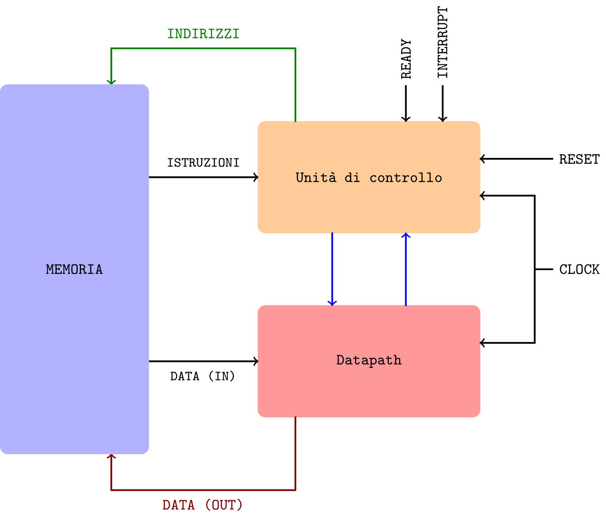
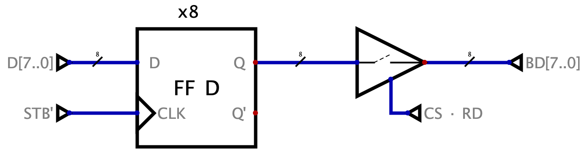

Definizione - Problemi di comunicazione gestita con buffer
Fino a questo momento, abbiamo considerato che la CPU gestisca la comunicazione con qualsiasi periferica esterna e che sia utilizzato come tramite un buffer. Tale metodologia comporta tuttavia alcune problematiche, ad esempio
- nessuno garantisce (alla CPU) che la periferica esterna abbia scritto nel buffer, rendendo quindi necessario un continuo controllo dei dati sul buffer (cosa a cui è possibile porre rimedio implementando un segnale di interrupt);
- nella fase di lettura (della CPU) nessuno garantisce (alla periferica) che la CPU abbia letto le informazioni nel buffer (informazione utile per evitare di sovrascrivere informazioni che andrebbero perse) e, analogamente, nessuno garantisce che la periferica abbia letto il dato nella fase di scrittura (della CPU).
Definizione - Protocollo handshake - Porta per input
L'utilizzo del protocollo handshake in input necessita, oltre che entrambi i dispositivi rispettino le temporizzazioni, un dispositivo di interfaccia, ovvero una "porta".  Il flusso del funzionamento di tale porta può essere suddiviso in fasi: Realizzazione Realizzare la rete logica che ha questo comportamento risulta essere particolarmente complicato, in quanto è necessario gestire diversi fronti di salita e di discesa contemporaneamente. Una realizzazione classica porterebbe infatti a clock gating (causato dalla presenza di gate sul clock) o alla necessità di utilizzare segnali asincroni, scelta non felice.
Il flusso del funzionamento di tale porta può essere suddiviso in fasi: Realizzazione Realizzare la rete logica che ha questo comportamento risulta essere particolarmente complicato, in quanto è necessario gestire diversi fronti di salita e di discesa contemporaneamente. Una realizzazione classica porterebbe infatti a clock gating (causato dalla presenza di gate sul clock) o alla necessità di utilizzare segnali asincroni, scelta non felice.
Una metodologia per realizzare ciò, è riconoscere i diversi fronti di salita e discesa dato che: In questo modo, tuttavia, si ha che alla fine di ogni "ciclo", i segnali logici rimangono tutti a livello "alto": è possibile ora però ragionare con logica negata per effettuare le relative attivazioni.
In questo modo, tuttavia, si ha che alla fine di ogni "ciclo", i segnali logici rimangono tutti a livello "alto": è possibile ora però ragionare con logica negata per effettuare le relative attivazioni.  Si avrà quindi che:
Si avrà quindi che:
- una fase di "quiete", in cui il buffer interno alla porta non contiene alcun dato interessante. In questa fase il segnale IBF (Input Buffer Full) asserito dalla portà avrà valore 0;
- una fase di scrittura da parte dell'unità esterna nella porta (possibile solo se il buffer è "vuoto", ovvero IBF = 0) segnata dall'asserzione del segnale STB (Strobe). Al fronte di salita di STB (ovvero nel momento in cui l'unità esterna sta "esprimendo la volontà" di voler scrivere il dato nel buffer), si ha che sarà asserito anche IBF = 1 (per indicare la presenza di dati);
- terminata la scrittura del dato nel buffer (al fronte di discesa di STB), la porta dovrà segnalare la presenza di un nuovo dato interno al buffer, asserendo quindi il segnale INT_R (Interrupt Request);
- tale richiesta di interrupt rimarrà a valore alto fino a che non inizierà la lettura di questo dato (ovvero al fronte di salita di RD);
- una volta terminata la lettura (al fronte di discesa di RD) si avrà che il buffer interno sarà vuoto, segnalando quindi IBF = 0.

Una metodologia per realizzare ciò, è riconoscere i diversi fronti di salita e discesa dato che:
- il segnale IBF dovrà avere valore 1 al fronte di salita di STB e valore 0 al fronte di discesa di RD;
- il segnale INT_R dovrà avere valore 1 al fronte di discesa di STB e valore 0 al fronte di salita di RD.
- il segnale IBF dovrà essere attivo al fronte di salita di STB ed essere attivo basso al fronte di discesa di RDIBF = STBSALITA \( \cdot\) RDDISCESA' + STBSALITA' \( \cdot\) RDDISCESAin quanto è necessario discriminare anche durante al secondo "ciclo" di lettura (in cui i segnali sono negati);
- il segnale INT_R dovrà essere attivo al fronte di discesa di STB ed essere attivo basso al fronte di salita di RDINT_R = STBDISCESA \( \cdot\) RDSALITA' + STBDISCESA' \( \cdot\) RDSALITAin quanto è necessario discriminare anche durante al secondo "ciclo" di lettura (in cui i segnali sono negati);

Definizione - Protocollo handshake - Porta per output
L'utilizzo del protocollo handshake in output necessita, oltre che entrambi i dispositivi rispettino le temporizzazioni, un dispositivo di interfaccia, ovvero una "porta".  Il flusso del funzionamento di tale porta può essere suddiviso in fasi:
Il flusso del funzionamento di tale porta può essere suddiviso in fasi:  Realizzazione Realizzare la rete logica che ha questo comportamento risulta essere particolarmente complicato, in quanto è necessario gestire diversi fronti di salita e di discesa contemporaneamente. Una realizzazione classica porterebbe infatti a clock gating (causato dalla presenza di gate sul clock) o alla necessità di utilizzare segnali asincroni, scelta non felice.
Realizzazione Realizzare la rete logica che ha questo comportamento risulta essere particolarmente complicato, in quanto è necessario gestire diversi fronti di salita e di discesa contemporaneamente. Una realizzazione classica porterebbe infatti a clock gating (causato dalla presenza di gate sul clock) o alla necessità di utilizzare segnali asincroni, scelta non felice.
Una metodologia per realizzare ciò, è riconoscere i diversi fronti di salita e discesa dato che: In questo modo, tuttavia, si ha che alla fine di ogni "ciclo", i segnali logici rimangono tutti a livello "alto": è possibile ora però ragionare con logica negata per effettuare le relative attivazioni.  Si avrà quindi che:
Si avrà quindi che: 
- una fase di "quiete", in cui il buffer interno alla porta non contiene alcun dato interessante. In questa fase il segnale OBF (Output Buffer Full) asserito dalla portà avrà valore 0. Si avrà quindi che il segnale di INT_R avrà valore 1, in quanto segnala la possibilità di ricevere un dato;
- una fase di scrittura da parte del processore segnata dall'asserzione del segnale WR. Al fronte di salita di WR (ovvero nel momento in cui il processore sta "esprimendo la volontà" di voler scrivere il dato nel buffer), si ha che sarà asserito anche INT_R = 0;
- terminata la scrittura del dato nel buffer (al fronte di discesa di WR), la porta dovrà segnalare la presenza di un nuovo dato interno al buffer, asserendo quindi il segnale OBF (Output Buffer Full);
- in questo momento sarà quindi l'unità esterna a dover leggere il dato: tale lettura sarà confermata con il segnale ACK (Acknowledge). Si avrà quindi che al fronte di salita di ACK il segnale OBF sarà asserito a valore 0 (dato che l'unità esterna ne ha "preso coscienza");
- al termine della lettura (ovvero al fronte di discesa di ACK) il buffer interno sarà vuoto, segnalando quindi INT_R = 1.
Una metodologia per realizzare ciò, è riconoscere i diversi fronti di salita e discesa dato che:
- il segnale INT_R dovrà avere valore 1 di default, valore 0 al fronte di salita di WR e ritornare al valore 1 al fronte di salita di ACK;
- il segnale OBF dovrà avere valore 1 al fronte di discesa di WR e valore 0 al fronte di salita di ACK.
- il segnale INT_R dovrà essere attivo basso al fronte di salita di WR ed essere nuovamente attivo alto al fronte di discesa di ACKINT_R = ((WRSALITA \( \cdot\) ACKDISCESA') + (WRSALITA \( \cdot\) ACKDISCESA'))'(utilizzando le leggi di De Morgan);
INT_R = (WRSALITA \( \cdot\) ACKDISCESA')' \( \cdot\) (WRSALITA \( \cdot\) ACKDISCESA')'
INT_R = (WRSALITA' + ACKDISCESA) \( \cdot\) (WRSALITA' + ACKDISCESA) - il segnale OBF dovrà essere attivo alto al fronte di discesa di WR ed essere attivo basso al fronte di salita di ACKOBF = WRDISCESA \( \cdot\) ACKSALITA' + WRDISCESA' \( \cdot\) ACKSALITAin quanto è necessario discriminare anche durante al secondo "ciclo" di lettura (in cui i segnali sono negati);